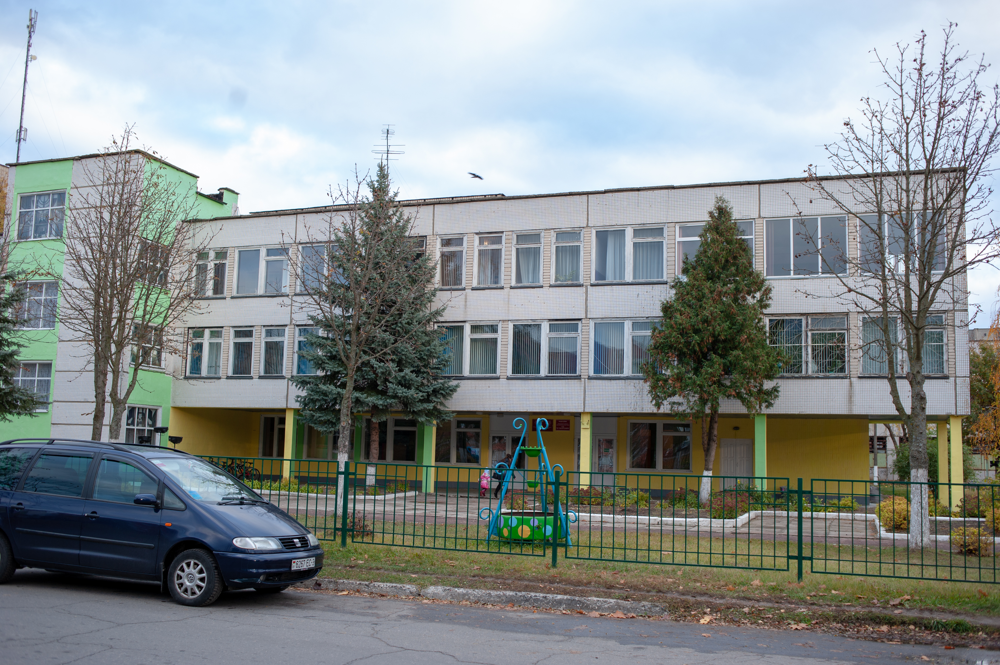

Государственное учреждение образования «Средняя школа № 11 г. Речицы»
Основные сведения
Тип учреждения: Учреждение общего среднего образования
Населенный пункт: Речица
Контактная информация
Адрес:
247492, Гомельская область, Речицкий район
г. Речица, ул. Строителей, д. 4
Телефон: +375 2340 795 65
Факс: +375 2340 7 96 77
E-mail: shkola11@rechitsa-edu.gov.by
Режим работы
Понедельник – суббота: 8:00 – 20:00
Руководство
Должность
Фамилия, имя, отчество
Директор школы
Ильёва Светомира Анатольевна
Заместитель директора по учебной работе
Ласица Вера Александровна
Заместитель директора по учебной работе
Глыбовская Елена Петровна
Заместитель директора по воспитательной работе
Рябцев Дмитрий Викторович
Предварительная запись на личный прием осуществляется по телефону 8 (02340) 7 95 65 (приемная).
Об учреждении

Основными задачами ГУО «Средняя школа № 11 г. Речицы» являются:
Обеспечить дальнейший рост качества образования в соответствии с запросами учащихся, их законных представителей и тенденциями развития общества через:
повышение качества проведения учебных и факультативных занятий в соответствии с требованиями образовательного стандарта, с учетом индивидуальных возможностей учащихся, их склонностей, способностей, в том числе, направленных на профильную и допрофильную подготовку;
совершенствование контрольно-оценочной и аналитической деятельности педагогов;
реализацию воспитательного потенциала каждого учебного предмета;
использование современных образовательных и информационных технологий, активных форм и методов обучения и воспитания, способствующих формированию познавательного интереса учащихся;
формирование предметных и метапредметных умений и навыков учащихся в процессе обучения, создание положительного микроклимата на учебных занятиях для учащихся с разным уровнем учебной мотивации;
совершенствование системы работы по выявлению и поддержке высокомотивированных и одарённых учащихся, вовлечению их в олимпиадное движение, научно-исследовательскую деятельность;
развитие здоровьесберегающей среды, обеспечение безопасных условий пребывания учащихся в учреждении образования;
расширение перечня образовательных услуг, в том числе и на платной основе.
Совершенствовать воспитательное пространство школы, содействующее развитию идейно устойчивой, нравственно и физически здоровой личности учащегося, способной к значимой социальной деятельности, осмысленному профессиональному выбору через:
формирование мировоззрения учащихся на основе представлений об идеологии белорусского государства, гражданственности и патриотизме;
воспитание информационной культуры личности учащегося и учителя, умения использовать информационное пространство;
формирование у учащихся системы социально-экономических знаний и умений творчески их применять при решении различных проблем;
развитие лидерских качеств учащихся посредством активизации деятельности ученического самоуправления, детских и молодежных общественных объединений;
создание условий для профессионального самоопределения учащихся, оказание педагогической поддержки учащимся в процессе выбора профессиональной сферы деятельности;
профилактику противоправного поведения и различного рода зависимостей, суицидальных рисков у детей и подростков;
формирование у учащихся ответственного отношения к своему здоровью как к личной и общественной ценности, стратегии культуры безопасного поведения.
Совершенствовать подходы к организации методического сопровождения профессионального роста педагога через:
совершенствование методики преподавания учебных предметов, актуализацию и углубление знаний учителей о современных технологиях обучения, способствующих развитию учебной мотивации;
практико-ориентированный характер методической работы, направленной на повышение качества проведения учебного, факультативного занятия в условиях допрофильной подготовки и профильного обучения;
совершенствование образовательного процесса по учебным предметам с учетом результатов республиканских контрольных работ по учебным предметам;
внедрение активных форм методической работы, обобщение и распространение эффективных практик, содействие их трансляции в отраслевой печати, конференциях, конкурсах профессионального мастерства;
формирование потребности в непрерывном самообразовании педагогических работников, методическое сопровождение их успешной аттестации.
Продолжить модернизацию, обновление и укрепление материально-технической базы.